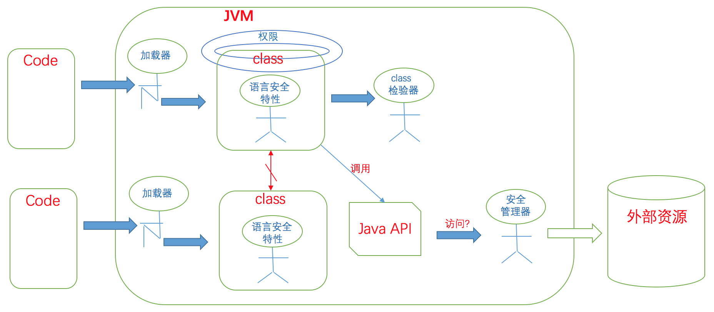

本文是对Java的安全性的汇总和个人理解，此处的内容是针对旧版的Java
Java 安全性是什么
Java 通过其安全模型 来保护终端用户免受从网路下载的、来自不可靠来源的、恶意程序的侵犯
Java 为什么需要安全性
Java 程序是可从任意来源获取并运行的，因此需要保证运行这些代码时能进行限制，免受恶意代码的破坏
Java 怎么样实现安全性
Java 使用沙箱模型来对程序运行进行限制，防止其进行破坏，沙箱模型由一些基本组件组成
- 类加载器体系结构
- class文件检验器
- 内置于Java虚拟机(及语言)的安全特性
- 安全管理器及Java API

前三个组成部分是为了保证JVM和它正在运行的应用程序的完整性，免受下载的恶意程序的侵犯；最后一个部分是为了保护外部资源不被JVM中运行的恶意程序侵犯
类加载器体系结构
是什么？
- 类加载器是用于动态的加载类二进制流的对象
- 类加载有4类：启动类加载器(java内部实现，负责加载java核心API)、标准扩展类加载器(java自带，加载ext目录下的类)、类路径类加载器(java自带，加载CLASS_PATH环境变量下的类)、自定义类加载器
- 类加载器使用双亲委派模式进行类的加载(非启动类加载器都有一个双亲类加载器的引用，加载类时会先让双亲加载，若双亲加载不到才自己加载)，启动类加载器 <- 标准扩展类加载器 <- 类路径类加载器 <- 自定义类加载器,保证可信的类由可信的类加载器优先加载
为什么？
类加载器是可信和不可信程序的入口，通过类加载器体系机构能够在一定程度上实现可信程序和不可信程序的隔离，并能对不可信的程序的资源访问进行限制
怎么样？
类加载器体系结构的作用
- 防止恶意代码干涉正常代码
不同的类加载器加载的代码属于不同的命名空间(相同的类可以用不同类加载器多次加载到JVM)，不同的命名空间中的代码不能互相访问(除非显式运行交互)，达到隔离恶意代码的效果
- 守护了被信任的类库的边界
使用类加载器双亲委托模型来保证所有信任的类库都通过信任的加载器来加载，不可靠的类可以使用自定义的加载器加载
- 为类创建保护域，由保护域来确定类所拥有的权限
每个类都属于一个保护域，用户可以为某个保护域的类设置资源的访问权限策略，这样就能起到限制代码权限的作用
class文件检验器
是什么？
class文件检验器是对 类加载器加载的类 进行检查的对象
为什么？
虚拟机不能保证 加载的类 是由合法的编译器生成的，需要对类二进制流的 结构，类型，语义，符号引用信息 进行检查，保证其完整性和健壮性
怎么样？
class文件检验器需要进行四趟扫描来完成校验
- class文件的结构检查
检查class文件的结构是否满足java对于一个类型的结构的定义，包括魔数、结构、长度等
- 类型数据的语义检查
检查各个组成部分的类型是否满足其所属的类型的定义，并检查这个类文件本身的类是否满足编译器所规定的条件
- 字节码验证
通过对字节码流中的操作码，操作数进行检查，保证所有字节码都能安全的执行
- 符号引用的验证
在执行过程中第一次引用新的类型时需要进行动态链接，这时候需要对引用的合法性(存在性等)进行校验，从而保证被引用的类文件的二进制兼容性
Java虚拟机中内置的安全特性
JVM通过在执行过程中加入以下特性来增强程序的健壮性
- 类型安全的引用转换
- 结构化的内存访问
- 自动垃圾收集
- 数组边界检查
- 空引用检查
安全管理器和Java API
是什么？
安全访问器是一个对象，它能确定一个程序是否有权限访问一个受保护的资源
所有对资源的访问都是通过Java API来完成的，当给应用程序赋予了一个安全管理器实例时，则Java API在访问资源前都会让安全管理器确认程序是否有权限访问资源
为什么？
通过把对资源的访问封装在Java API里，然后API在访问资源前使用安全管理器确认程序是否有权限访问资源，这样就能保护外部资源不被不受信任的程序访问
怎么样？
Java通过签名对 受信任的代码 确定其身份和完整性
一个class文件有它的代码来源，代码来源是指 代码从哪来、若被签名则是从谁那里来
代码对资源所拥有的访问权限都与代码的代码来源相关联，所以在给某段代码赋予权限时，要制定其来源和所拥有权限
所有的代码权限赋予都记录在一个ASCII策略文件里，文件里的内容有固定的语法，内容大意是 给 某个代码来源的代码 赋予 访问某种资源的权限
类加载器 在加载类时 会给类创建一个保护域，保护域里有策略文件里定义的代码来源 和 所拥有的权限(类加载器也可以不参考策略文件)，当程序使用Java API时，安全管理器 能通过代码的保护域中的权限来确定代码是否能访问资源